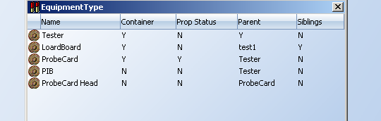

From TTT 3.1 version it includes a durable management module, it allows to manage different durables.
The first thing the administrator needs to do is to define the equipment types that TTT is going to manage
From the Tool Time Tracker User Interface click on Equipment type to display a table with all the equipment types, to add or delete equipments right-click over the table
Click on Add; the following dialog you can enter the
Name: used to identify the equipment type, e.g. Tester
Container: specify if this equipment is going to hold other equipments in it, valid values are Y/N
Parent: indicates the Equipment Type that can hold this equipment type, the value has to be a Equipment Type that has been configured as container.
Siblings: indicates if a type of equipment can have siblings from its type for a given parent
Prop Status: if set as Yes, when doing transition on the parent , the transition can be prop up to the children attached to it.
Area Name: indicates department name
Mes Equipment Type: indicates genesis machine type name of current equipment type
Sync Durable Flag: indicates if TTT need to send durable information to genesis
Sync Model Flag: indicates if TTT need to send model information to genesis
Platform Source: indicates the source of platform list in machines form
Model source: indicates the source of model list in machines form
Child source: indicates the source of child model in machines form
Defining Attributes
To define attributes click on Attributes from the tree, this displays the defined attributes for the equipment table.
Right-click to add/delete attributes, you need to enter the following data to define an attribute
Name: used to identify the attribute
Required: indicates if it is required to enter when introducing new equipments. Valid values are Y\N
Belongs: it defines if the attribute belongs to the equipment or to the status of the equipment. Valid values are STATUS\EQUIPMENT
Type: the type of the attribute; valid values are Text, Counter and ThresholdCounter. Text allow any ASCII character, Counter is a numeric values that can be incremented/set.ThresholdCounter consists of a common set of attributes that are listed in the table below
|
Attribute Name |
Description |
|---|---|
|
Name |
The name of the ThresholdCounter |
|
eiVariable |
An variable sent in an EPR event to the server |
|
units |
The unit of the measurement |
|
serviceUsageLimit |
limit to indicate that this durable needs service |
|
serviceUsage |
Count the usage since the last service |
|
totalServicesLimit |
number of services this durable is allowed to receive |
|
totalServices |
Number of services this durable has received |
|
rebuildUsageLimit |
to indicate that this durable needs a rebuild |
|
rebuildUsage |
Count the usage since the last rebuild |
|
totalRebuildsLimit |
number of rebuilds this durable is allowed to receive |
|
totalRebuilds |
Number of rebuilds this durable has received |
|
lifeLimit |
limit to indicate that this durable has reached its life in service, and is going to be scrapped |
|
lifeUsage |
The usage this durable has during his lifetime |
When an attribute is of type ThresholdCounter and the user clicks on configuration the cofiguration options are displayed. The configuration options for Threshold Counters are eiVariable and Units. Units valid values are Usage, Time. EI Variable is the variable that will be present in the incoming EPR that is going to increase the counter.When adding a durable that has a ThresholdCounter the limits of the counter are displayed to be entered.The limits are life Limit, total rebuilds Limit, rebuild usage limit, service usage limit, total services limit.
Business RulesBusiness Rules define the behavior of the durable when a certain event happens. A business rule consists of three parts, the event that triggers it, the conditions that need to be met in order to execute it and the actions to perform.
Click on Business Rules to display the list of business rules defined, the table shows the event that trigger the business rules and the name of the rule, the event can be selected from a list of predefined events. The following table lists the events supported
|
Events |
Description |
|---|---|
|
EPR Received |
TTT receives an EPR message from the client |
|
Monitor |
Continuous monitoring on the durable. |
|
Add Equipment |
A new equipment is entered into TTT |
|
Attach Child Equipment |
Enable to attach one or many of the durables that the equipment type has configured as child |
|
Model Configuration |
Configure Model Attributes |
Conditions
A condition consists of three parts
Attribute: one of the attributes of the equipment type
Condition: the operator to use in the evaluation, it could be =, >, >=, <= and In.
Cond Value: value to use in the evaluation, it could be a literal value or an attribute of the equipment.
Actions:
The action to execute when the conditions are met. The actions can be one of the following
| Actions |
Description |
Parameters |
|---|---|---|
| Send Email | send an email to the list specified in the parameters | email address or coreID seperate by "," |
| Alarm on Window | the durable blinks on the Tool Time Tracker main view. | RGB color in hexadecimal format for color of flashing |
| Update State via EPR | perform transition according to incoming epr message | Specify the mapping between Tester state (flowed by "_SUBSTATE")and the particular Equipment state, such as "PRODUCTIVE_SUBSTATE=Production Running,STANDBY_SUBSTATE=Production Ready" |
| Update Durable | update particular attributes according to the incoming epr | the attribute name in the EPR message |
| Generate file | generate the file on the folder configured as "transferDirectory" | Timeout: frequency to create the file in minutes. Head: the message on the first line that not part of content. Filename: name of the file. Content: the format of each line of content separate by "#". Example: Timeout=1,Head=Connected.,Filename=overtouchdown_pc.txt,Content=DURABLE_ID#location |
| Generate File from Template | generates a file based on a template, the file is located in the folder configured as "transferDirectory" | timeout: frequency to create the file in minutes. Filename: name of the file. Head: the message on the first line that not part of content. template:template to be used to create the file, currently two templates are provided : template_ProbeCard_RPS.txt and template_LoadBoard_RPS.txt these templates are in the WEB-INF directory Example: fileName=probeCardFeed,timeout=60,template=template_ProbeCard_RPS.txt |
| Initialize State | Initialize a new equipment added with the state specified | STATE:E10 state to set SUBSTATE:substate to set Example: STATE=Standby,SUBSTATE=Idle |
| Update Multiple | Update multiple durables of the same type with a single EPR | This action must be defined in the EPR-Receiving Equipment (usually the tester) and in the multiple-attached durable, the following parameters are defined in the
EPR-Receving Equipment, in the multiple-attached durable the action is defined without parameters equipment_type: the equipment type that have multiple durables e.g Socket id_variable: the context variable that will have the name of the durables, it will accept ? as a wildcard character increment_variable: the summing variables that will have the increment, it will accept ? as a wildcard character limit: the number of variables that are in the message, for example 32, 64, 128 |
| Attach Multiple | It enables to attach multiple child equipments to the parent equipment type This action must be defined in a parent equipment type (it receives children equipment) and in a rule with the Attach Child Equipment event For example a Loadboard that receives multiple Sockets, the parent is the Loadboard and the actions would be defined on it. |
CHILDREN_EQUIPMENT_TYPE: it should be the exact name of the equipment type to attach. in this sample it would be Socket CHILDREN_NUMBER: indicates how many children will be attached during a Attach Multiple operation. It could be a numeric value or an attribute of the parent equipment Type. if the value starts with a $ it is taken as an attribute |
| Set Index | It sets an index in the durable during Attach Multiple This action must be defined in a rule with the Attach Child Equipment event For example a Loadboard that receives multiple Sockets, the parent is the Loadboard and the actions would be defined on it. |
INDEX_VAR: the variable that will hold the index in the attached durable |
| Update Multiple by Index | It enable to update multiple durables with one EPR, the multiple durables are updated according to the variable in the replace This action must be defined in a rule for the EPR Received event it is defined in the attached durable. |
FIELD: the variable that will hold the index in the attached durable REPLACE: the name of the variable from the EPR that will update the durable, it contains a ? that will be replaced with the index specified in the FIELD argument |
| Update Attribute with External Source | Update an attribute of the equipment with an external data source | This action must be defined in a monitor business rule in order for this business rule to work the external data source should be configured in conf.txt. The properties to configure are :OracleExternalDBServer, OracleExternalUser, OracleExternalPassword,OracleExternalPort,OracleExternalSID. see the conf.txt documentation for more details query: the SQL query to execute, if an attribute of the equipment is going to be used as a parameter it should be prefixed by $. sample "select partname from part where activeflag = 'A' and partname like '%$MASK'" where MASK is an attribute of the equipment where this rule is defined attribute: the equipment attribute that is going to be updated with the result for the query timeout: number of minutes where this action will be executed parameters need to follow the json format. e.g. everything should be between {}, parameters are name:value where value is a string enclosed by " ", multiple parameters are separated by , {query:"select partname from part where activeflag = 'A' and partname like '%$MASK'",attribute:"ALLOWED_DEVICE",timeout:"60"} This parameters define that the attribute ALLOWED_DEVICE would be updated with the result from the query, the query uses the equipment attribute MASK as a parameter and this action will be executed every 60 minutes |
| Display in Monitor Page | Display durables in PM Monitor page | count: the variable with the usage or time for the PM limit : the variable with the limit for the PM example count=TOUCHDOWN$serviceUsage,limit=TOUCHDOWN$serviceUsageLimit |
| Add Verification Checkbox | Highlight dropdowns in attach children page | no attributes |
| Auto Model Name | It enable to generate model name automatically | This action belongs to model management function. method:the way to generate model name possible values:3-DIGITS filterCharacters:if true, means the model name will be generated using subset of alphanumeric characters(exclude B, D, G, I, J, O, U, V,0) possible values:true,false example:method=3-DIGITS,filterCharacters=true |
| Auto Model Description | It enable to generate model description automatically | This action belongs to model management function. value:the expression to generate model description example:value=LB-${tester}-${nickname}-${pkgcode}-${parellel}-${handler} |
| Mandatory Fields | mandatory model attributes | This action belongs to model management function. attributes:the mandatory model attributes example:attributes=[tester,nickName,pkgCode,parallel,handler] |
| Optional Fields | optional model attributes | This action belongs to model management function. attributes:the optional model attributes example:attributes=[prodLine,device,lbQty] |
| Dropdown Values | Configure attributes value list if user want to select them | This action belongs to model management function. example:SITES_NUMBER=[4,8,16,32],handler=[castle,J750] |
| Creator Role | Configure a list of rolePk who can create model | This action belongs to model management function. role:the list of creator rolePk split by comma example:role=[1,20] |
| Approver Role | Configure a list of rolePk who can approve model | This action belongs to model management function. role:the list of approver rolePk split by comma example:role=[1,21] |
| Releaser Role | Configure a list of rolePk who can release model | This action belongs to model management function. role:the list of releaser rolePk split by comma example:role=[1,22] |
| Approval Process | approval type | This action belongs to model management function. Possible Values: type=1, No Approval required. type=2. Need approval, no need for release. type=3. Need approval, release. |
| Overwrite Durable Attributes | It enable to trigger an update for a list of durable attributes belong the model once user update the model attributes | This action belongs to model management function. Possible Values: flag=true, user is able to select a list of durables to apply the attributes change. flag=false, user is not able to select durable list to apply the attributes change. |
Transitions:
Click on Transitions to view the State Transitions defined for this durable
To add or delete state transitions right-click.
The administrator needs to specify the following items:
From: The initial state of durable
To: the final state of the transition
Conditions: the conditions to evaluate in order perform this transitions, they are similar to the conditions defined for business rules. For example, "Multiple-in" is to allow user to select value defined in condition value from a drop down list when conducting transition. "Display" is to not allow a certain attribute to be editable during a transition.
Action: To perform increase or reset on selected attributes after transition.
|
Action |
Description |
Parameters |
|---|---|---|
| Increase | Increase by 1 the counter specified in the parameter | The name of the attribute to increase, it must be a counter |
| Decrease | Decrease by 1 the counter specified in the parameter | The name of the attribute to decrease, it must be a counter |
| Increase by | Increase the counter specified in the "attribute" parameter by the quantity specified in the "by" parameter | attribute:the name of the counter to increase by:the name of the variable or value with the quantity of the increment |
| Decrease by | Decrease the counter specified in the "attribute" parameter by the quantity specified in the "by" parameter | attribute:the name of the counter to decrease by:the name of the variable or value with the quantity of the increment |
| Reset | Reset the attribute specified to 0 if counter o "" if text | attribute:the name of the attribute to reset |
| Set | Set the attribute to the value specified, if the value starts with $ it is interpreted as a variable from the durable | attribute: the name of the attribute to set value: the value to set example: attribute=Location, value=shelf it will set the Location attribute to shelf attribute=Location, value=$slot it will set the Location attribute to the value from the durable field slot |